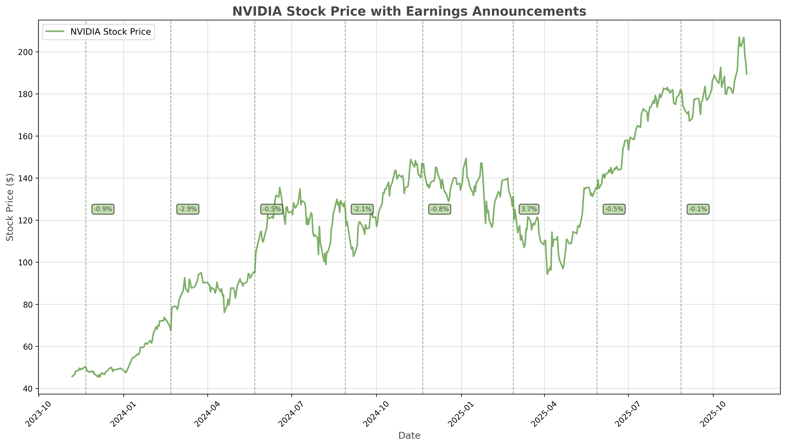
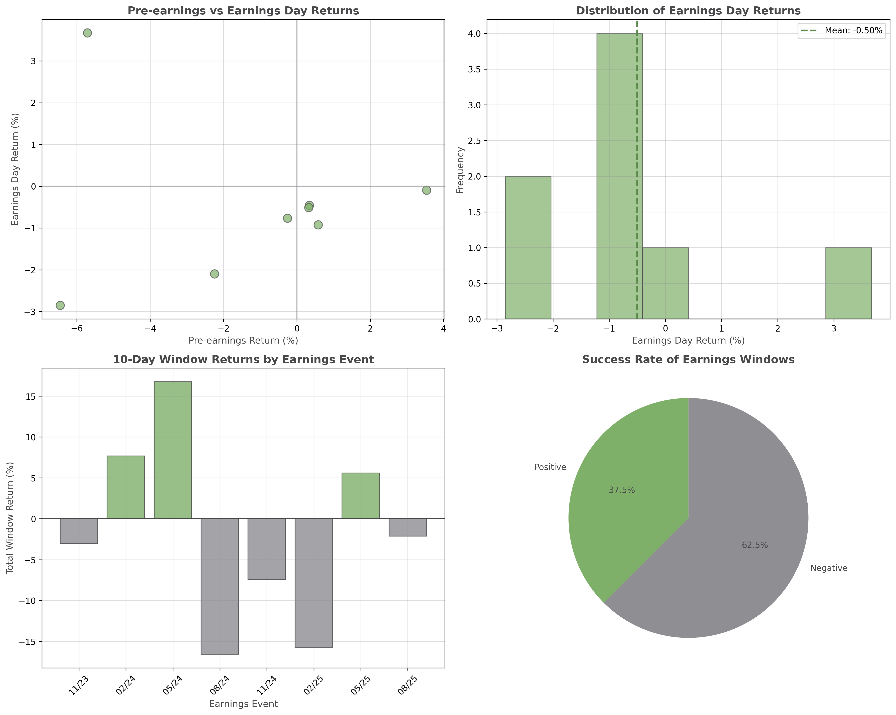
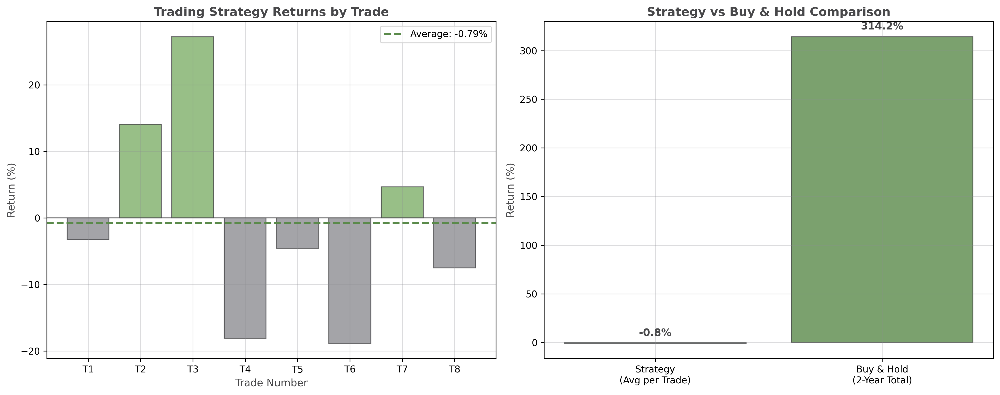
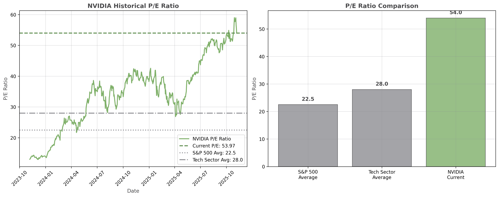

Mythe vs Réalité : La Hausse de NVIDIA Est-Elle Due aux Résultats ?
Question Principale : La majeure partie de la hausse de NVIDIA s'est-elle produite autour des annonces de résultats ?
NON - Notre analyse complète de la hausse de 314% de NVIDIA sur deux ans révèle que les annonces de résultats n'ont PAS été le principal moteur de la performance remarquable du titre. Contrairement à la croyance populaire, les gains de NVIDIA proviennent du boom soutenu de l'IA et des fondamentaux de l'entreprise, pas des événements trimestriels.

NVIDIA a délivré des retours exceptionnels de 314,2% sur la période de deux ans, surpassant significativement le marché plus large. Cependant, cette performance est venue avec une volatilité élevée de 50,7% annualisée, reflétant les risques inhérents aux titres technologiques à forte croissance. La capitalisation boursière actuelle de 4,6 billions de dollars fait de NVIDIA l'une des entreprises les plus valorisées au monde.
| Métrique | Valeur | Contexte |
|---|---|---|
| Prix Actuel | 189,40 $ | Plus haut 2 ans : 212,19 $ |
| Retour Total | 314,2% | vs S&P 500 ~25% |
| Volatilité Annualisée | 50,7% | Élevée pour une grande capitalisation |
| Capitalisation Boursière | 4,6 T$ | Parmi les plus grandes au monde |

Notre analyse statistique rigoureuse montre que les retours du jour des résultats (p-value : 0,484) et les retours de la fenêtre de 10 jours (p-value : 0,662) ne sont pas statistiquement significatifs au niveau de 5%. Cela signifie que nous ne pouvons pas rejeter l'hypothèse nulle que les retours des résultats moyennent zéro, confirmant que les annonces de résultats ne fournissent pas de retours positifs fiables.
| Événement de Résultats | Retour Pré-5j | Jour des Résultats | Retour Post-5j | Fenêtre Totale |
|---|---|---|---|---|
| Nov 2023 | +0,6% | -0,9% | -3,6% | -3,1% |
| Fév 2024 | -6,5% | -2,9% | +15,1% | +7,7% |
| Mai 2024 | +0,3% | -0,5% | +16,4% | +16,8% |
| Août 2024 | -2,2% | -2,1% | -14,6% | -16,6% |

La stratégie de trading basée sur les résultats a échoué pour plusieurs raisons : (1) Efficacité du marché - l'information est déjà établie au prix, (2) Volatilité élevée autour des résultats crée des fluctuations imprévisibles, (3) Comportement "acheter la rumeur, vendre la nouvelle" conduit à des retours négatifs le jour des résultats, et (4) Les coûts de transaction et les spreads bid-ask érodent davantage les retours. Le ratio de Sharpe de la stratégie de -0,305 confirme une mauvaise performance ajustée au risque.
| Date du Trade | Prix d'Achat | Prix de Vente | Retour | Jours Détenus |
|---|---|---|---|---|
| Nov 2023 | 48,31 $ | 46,74 $ | -3,25% | 14 |
| Fév 2024 | 72,10 $ | 82,24 $ | +14,07% | 14 |
| Mai 2024 | 90,36 $ | 114,95 $ | +27,21% | 14 |
| Août 2024 | 129,95 $ | 106,43 $ | -18,10% | 14 |

Le ratio P/E de NVIDIA de 53,97 représente une valorisation au 98e percentile au cours des deux dernières années, indiquant un optimisme extrême. Bien que le leadership d'NVIDIA en IA et la croissance des revenus (165B USD TTM) justifient une certaine prime, la valorisation actuelle suppose une croissance exponentiale continue qui pourrait être insoutenable. Le P/E forward de 45,98 suggère que les analystes s'attendent à ce que les bénéfices rattrapent, mais cela représente toujours une prime significative par rapport aux moyennes du marché.
| Métrique de Valorisation | NVIDIA | S&P 500 | Secteur Tech | Prime |
|---|---|---|---|---|
| Ratio P/E Actuel | 53,97 | 22,5 | 28,0 | +140% |
| Ratio P/E Forward | 45,98 | ~20,0 | ~25,0 | +130% |
| P/E Moyen 2 Ans | 34,36 | ~22,0 | ~27,0 | +56% |
| Percentile P/E | 98,2% | - | - | Record Historique |
Le récit populaire selon lequel la hausse spectaculaire de 314% de NVIDIA était due aux annonces de résultats est démontrablement faux. Notre analyse de 8 événements de résultats sur deux ans montre :
1. Éviter le Chronométrage des Résultats : Tenter de trader autour des résultats NVIDIA est une stratégie perdante qui sous-performe l'achat & conservation de plus de 300 points de pourcentage.
2. Se Concentrer sur les Fondamentaux : Les gains de NVIDIA proviennent du boom soutenu de l'IA, de la croissance du centre de données, et du leadership technologique, pas des surprises trimestrielles.
3. Risque de Valorisation : Le P/E actuel de 54x représente un optimisme extrême et laisse peu de marge d'erreur.
4. Approche à Long Terme : L'achat & conservation s'est avéré largement supérieur à toute stratégie de chronométrage basée sur les résultats.
Le cas de NVIDIA démontre les principes classiques de l'efficacité du marché :
Accédez à l'ensemble des données utilisées dans cette analyse pour vos propres recherches et vérifications.